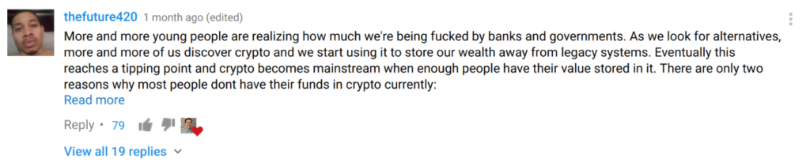

I haven’t been posting on Facebook in a while and I have never written something like this on my blog but here we go.
Trust
A lot of issues regarding Facebook’s walled gardens and Google’s projects (AMP and others) have spurred regular people to start considering their online behavior. This is a good thing. As society becomes more technocratic, we evolve to understand our tools and consider the consequences.
Combine this newfound understanding with a strong sense of distrust in governments and financial institutions. What happens? Blockchain.

Havard scholar “thefuture420” breaks the movement down for us
Why?
The blockchain movement isn’t simply about currency anymore. It’s about decentralization, distribution and the “property rights” of your “bits and bytes”. While you don’t need a blockchain to decentralize and distribute a file system, you do need incentives for participants to host and transfer files. For example if you’re not close to India, someone in India can get a copy of your file to someone who wants it, or if you are disconnected and your hard drive erased, some node on the network still has your file.
The issues of trust (ironically), incentive, compensation models and simply “will this replace my YouTube cat videos” are still being developed and debated.
Most promising are the concepts that fully engage both users and devices in distributed publishing and consumption of content. Web 2.0 has become an oligarchy of centralized services that funnel users traffic and attention through stratified pricing tiers.
YouTube stars are moaning over compensation, publishers are clueless / desperate and journalists are hopeless.
We have an internet of information, we need an internet of value.
The Last Mile
It was a problem for the internet in the 90’s and it’s a problem today. All of this fervor and excitement is flying in the face of practicality and profits, which are necessary evils in ANY form of society.
Ideas are happening fast… without tangible adoption. How do I buy a sandwich, a beer, surf a website, stream a video, store my DNA forever?
IMHO the current bubble around blockchain technology as a whole will have a correction, but like the 90’s and web 1.0 it will all eventually take root, it has to.
{kind=link}
{kind=link}